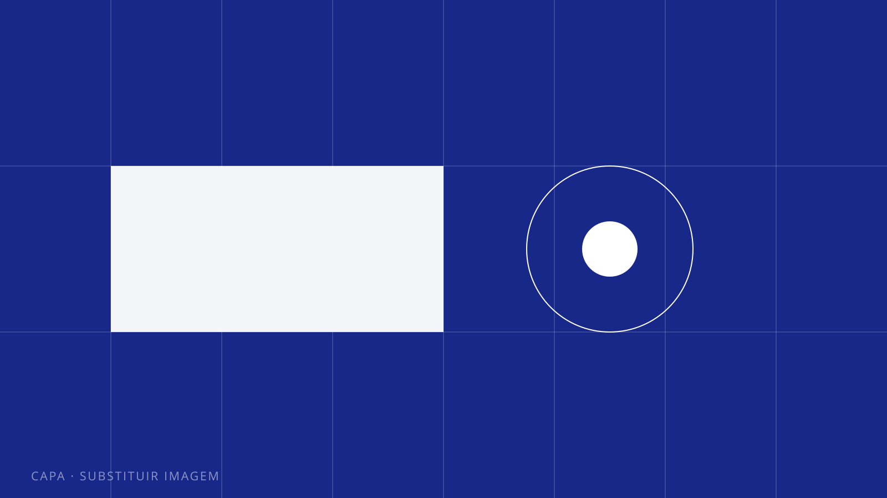
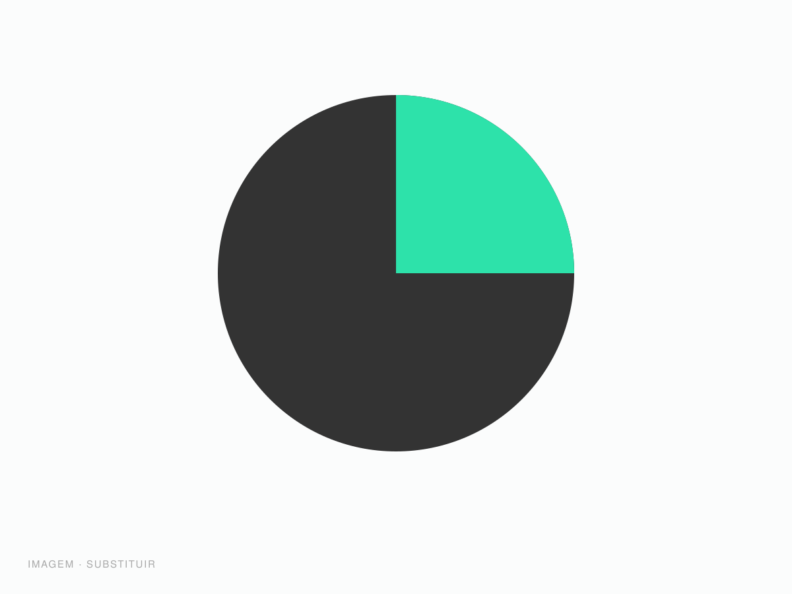
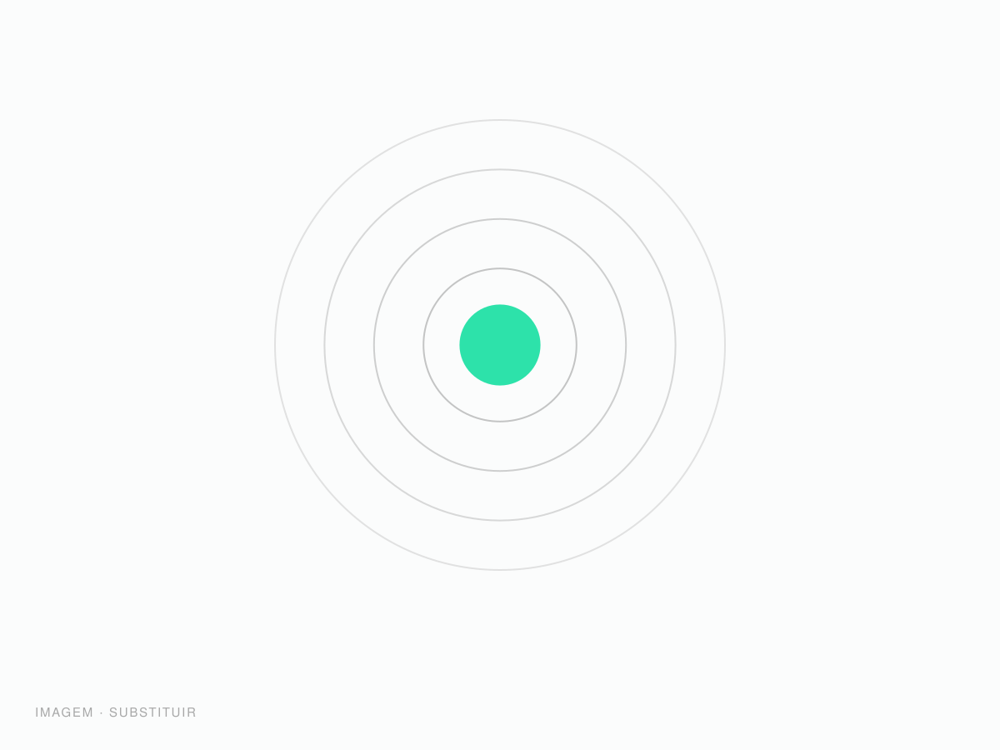
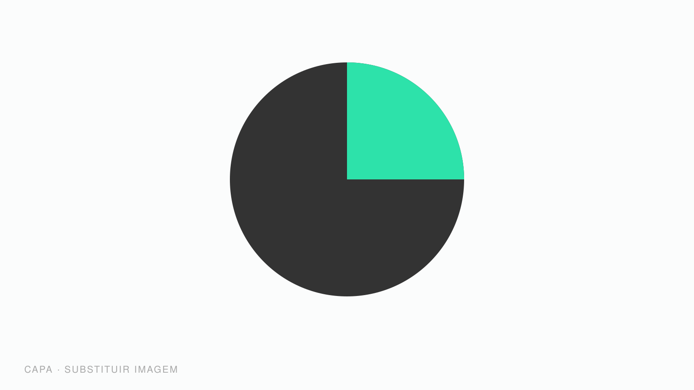

Projetos / 01 / Identidade
Meridiano Capital
Uma gestora com 12 anos de história e uma marca que ainda falava como banco. Reposicionamos o discurso e reconstruímos o sistema visual do zero.

A Meridiano crescia por indicação, mas perdia processos competitivos para casas menores e mais novas. O diagnóstico apontou o motivo: a comunicação repetia os mesmos códigos de banco tradicional — serifas pesadas, azul institucional, fotos de aperto de mão — enquanto o time e a tese de investimento eram exatamente o oposto disso.
Havia ainda um problema operacional. Cada área produzia material do seu jeito: três versões do logo circulavam, apresentações eram refeitas do zero a cada reunião e nenhum documento tinha origem clara.


Reescrevemos a plataforma de marca em torno de uma ideia simples: a Meridiano é uma casa de decisões, não de produtos. Isso definiu o tom verbal — direto, sem jargão — e orientou toda a construção visual.
O símbolo parte da linha do meridiano: um traço que corta o círculo e marca uma posição. A tipografia é neutra e de leitura longa, pensada para relatórios; a cor se resume a um azul profundo, um cinza quente e o branco. O sistema inteiro cabe em quatro páginas de manual — por decisão de projeto, para que fosse de fato usado.

O que mudou.
Seis meses depois da entrega, com a marca aplicada em todos os pontos de contato.
Versões do logotipo em circulação, unificadas em um único arquivo-fonte.
Redução no tempo de montagem de apresentações, com os novos templates.
Do primeiro briefing à marca no ar, dentro do cronograma acordado.
Tudo o que foi para as mãos do cliente ao final das oito semanas.
Símbolo e logotipo
Arquivos vetoriais em todas as versões, positivo e negativo, com áreas de proteção definidas.
Manual de aplicação
Quatro páginas objetivas: uso correto, cor, tipografia e grid.
Templates
Apresentação, relatório mensal, papelaria e assinatura de e-mail.
Treinamento
Sessão de duas horas com marketing e comercial, gravada para novos entrantes.
Contato
Seu projeto pode ser o próximo.
Conte em duas linhas o que você precisa. Respondemos em até um dia útil.
Iniciar projeto